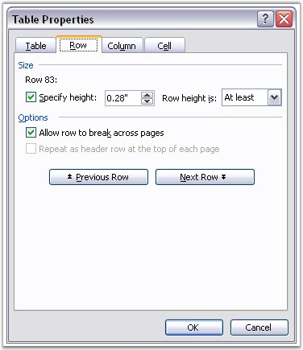

RowFormat class represents table or table row formatting in the Word document.
Properties
· Borders: defines format of row borders (width of line, line color and so on)
· Paddings: defines margins for the cells in the row or table
· CellSpacing: defines spacing between cells
· LeftIndent: defines left indent of table or table row
· IsAutoResized: defines if table or row auto resizes to fit the text
The following screen shot illustrates how to set the Row Format in MS Word.

Figure 40: Row Format Options in Table Properties Dialog Box
Public Properties
|
Name |
Description |
|
Bidi |
Gets or sets whether table is right-to-left. |
|
Borders |
Gets borders. |
|
CellSpacing |
Gets or sets spacing between cells (in points). |
|
HorizontalAlignment |
Gets or sets horizontal alignment for the paragraph. |
|
IsAutoResized |
Gets or sets the boolean value indicating if the table is auto resized. |
|
IsBreakAcrossPages |
Gets or sets the boolean value indicating if there is a break across pages. |
|
LeftIndent |
Gets or sets table indent (in points). |
|
Paddings |
Gets paddings. |
|
[C#]
// Adding a new Table to the textbody. IWTable table = sec.body.AddTable();
RowFormat format = new RowFormat(); format.Paddings.All = 5; format.Borders.BorderType = Syncfusion.DocIO.DLS.BorderStyle.Dot; format.Borders.LineWidth = 2;
// Inserting rows to the table.This will apply the format to whole table table.ResetCells(6, 6, format, 80); |
|
[VB.NET]
' Adding a new Table to the textbody. Dim table As IWTable = sec.body.AddTable()
Dim format As New RowFormat() format.Paddings.All = 5 format.Borders.BorderType = Syncfusion.DocIO.DLS.BorderStyle.Dot format.Borders.LineWidth = 2
' Inserting rows to the table.This will apply the format to whole table table.ResetCells(6, 6, format, 80) |